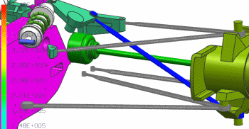

可选：定义另一个柔性体
为了简化，您只定义了一个悬臂组件作为柔性体，如果时间允许，可以重复这个练习中的步骤定义剩余的悬臂组件作为柔性体。
-
在高级仿真中，为各个悬臂创建一个 FEM 文件、仿真文件，以及 SOL 103 柔性体解算方案。
-
在高级仿真中，求解各个解算方案以为柔性体生成.rfi 文件。
-
在运动仿真中，为各个柔性体创建柔性连杆。
-
将所有的柔性连杆添加到现有的运动仿真中。
-
求解运动解算方案，注意到 NX 将自动调用 NX Nastran 以为各个柔性体求解模态解算方案，整个求解过程可能要花费几分钟时间才能完成。
-
查看结果动画。
各个柔性体都有它自己的后处理视图，您也可以单独编辑。在运动导航器中各个解算方案的动画节点下方，右击要编辑的柔性连杆并选择编辑后处理视图。
同时，当您有多个柔性连杆时，云图仅显示一种类型的连杆结果，要知道显示的柔性连杆，在运动导航器中解算方案的动画节点下方，右击柔性连杆并选择将图例设为可见，云图图例将指示这种结果类型的时间增量和最小/最大结果值，连杆其它结果类型的云图显示为灰色。
在下面的例子中，蓝色悬臂的后处理视图被设置为应力–节点的，其它柔性连杆的后处理视图被设置为位移–节点的。蓝色悬臂设置为将图例设为可见，所有只有它的云图显示在动画中。

 文件→关闭→所有部件
文件→关闭→所有部件